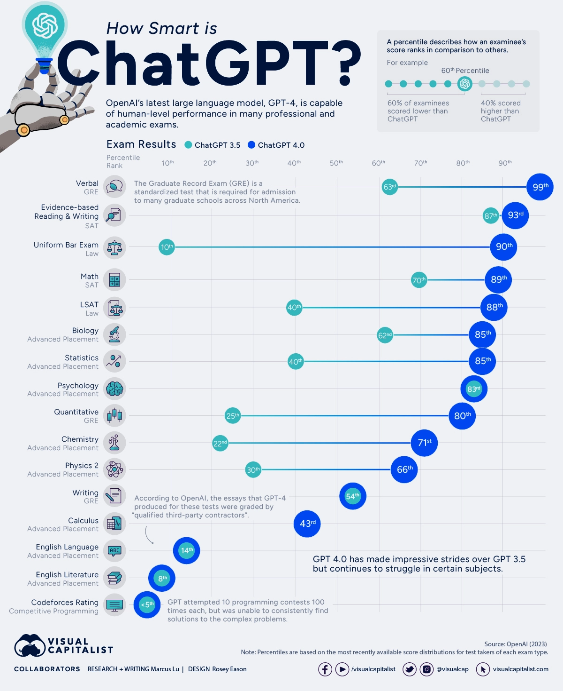
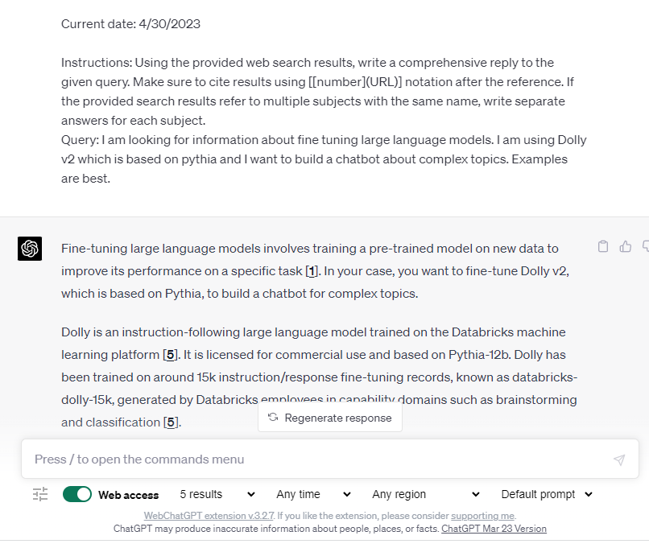
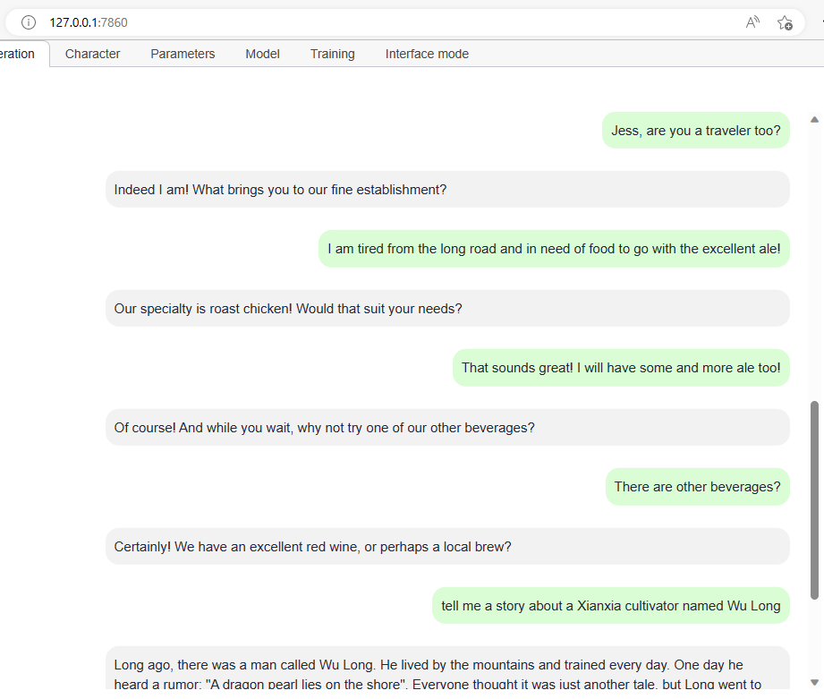

Building Domain Specific LLM Bots
I’m taking on a lot of new responsibilities at work as I move into a role directing the architecture of a huge platform. Over the next years, AI is going to get baked into everything to some degree. Today we are very early in the process, but to me it seems obvious that the first step for everyone is to create a knowledge base of whatever it is they do. And, like I said, in my case what I do is wrangle software architecture for a huge system.
I intend to try to capture that knowledge so we can use the power of a large language model to reason against it, answer questions, and project different architectural views. So, this week, I wasn’t working on work during the day and my game at night. I was focused fully on work.
The Power of the Untrained Model
Consider the following infographic from (visualcapitalist.com)[https://www.visualcapitalist.com/how-smart-is-chatgpt]

Notice that the subjects at the bottom of the list are ones where there are many elements with complex relationships to each other. The transformative power of the LLMs is the ability to package and project ideas. It's ability to do "Evidenced-based Reading and Writing" proves that using it in any domain well will be an exercise in feeding it the right evidence in context of questions.
This is why Bing Chat is so compelling as a general-purpose example. Even a relatively unsophisticated add-in like (WebChatGPT)[https://github.com/qunash/chatgpt-advanced] demonstrates the power by gathering the info for the prompt. "Vector Databases" for memory work the same way by injecting the context into the prompt.
WebChatGPT is a browser extension that searches the web and creates prompts for ChatGPT

The Application Sweet Spot
The maximum value of today’s AI is in its sweet spot – encapsulating ideas to produce a good output given good input. Its strength is not reasoning against information to add information through perceptive and novel insights. This is why GPT3 and 4 do very well on “Evidence-based Reading and Writing” and why they do equally poorly on “Codeforces Rating”. The former test comes with the evidence needed to write a good response and the later requires complex reasoning and insight to solve challenges that test the ability to perform complex reasoning creatively.
It is notable that in both cases the difference between GPT3 and GPT4 is small enough to describe their performance as similar. GPT3 is very good at “Evidence-based Reading and Writing” (87%) and is fit for a wide range of applications where we require answers based on the evidence of the text. In the case of LLMs, the text is the prompt and the conversation context.
Using this Perspective to ‘Win’ at AI
In the software industry, tools aimed at making development easier such as Copilot are getting a lot of press. Businesspeople have dreamed of a world without expensive developers for years, and this technology has many of them believing that the day they’ve been dreaming of is almost here. I think they will be waiting for some time to come. These tools are useful in many aspects of software development and make it faster and easier, but the reasons >95% of the human Codeforces competitors beat GPT3 and GPT4 are extant and there is little evidence this will change suddenly in the near future.
I think most experienced people recognize the critical importance of the idea of ‘using the right tool for the job’. Being innovative when a new tool emerges requires one to find the jobs that match the tool, trying things, and scaling up the things that work based on the experience.
What seems obvious to me at this point is:
- LLMs today produce great output when the model and the request contain the evidence required for a good response
- LLMs today can’t produce acceptable output when the model and the request do not contain the evidence required for a good response
- To apply this technology well, one must focus on ensuring the model and the requests contain the evidence required for a good response in the context of your application
GPT3.5 versus GPT4
GPT-4 has two variants with different limits: one with 8,000 tokens and another with 32,000 tokens. This means that GPT-4 can handle larger amounts of text and keep conversations going for longer compared to its predecessor GPT-3.5 which had a max request value of 4,096 tokens.
What this means in the context of this article, is that, whether you are gathering information with search and injecting it into the prompt, or summarizing previous aspects of the conversation and injecting it into the prompt, the prompt length limit is one of the most important factors that limit what is possible.
For many applications using Chat-GPT is not a great option on its face
Today, for chat, there is simply no question that GPT4 is king of the hill. For my game (which is fundamentally a learning exercise) I am sticking with it. On the other hand, for the sort of proprietary and confidential information I am dealing with at work, maybe sharing valuable information with a third-party cloud service is a bad idea.
It is public knowledge that my employer is partnering with Microsoft for certain ChatGPT powered products, so it is possible that, in the end, that is what we will use it to power my architecture bot. In the meantime, we will need to feed it the right context to get the right answers. So, step one is to compile our knowledge in a format that we can use with an LLM.
What about Microsoft Copilot * and M365?
This week (May 1, 2023) I expect to see many announcements from Microsoft at the (M365 Conference)[https://m365conf.com/] about many AI doodads in Office and M365 products. It is possible that what they announce will reset my current operating theories, but I doubt anything they offer will meet my expectations because ours is a very complex domain.
ChatGPT Alternatives
Fundamentally what I care about is getting our architecture and design knowledge into a vastly more usable form as an AI agent. It is possible that one of the Microsoft solutions will be the winner, but what if it takes a long time? What if I can’t ever use those for some important compliance reason?
I need something that is licensed for commercial use that can be fully isolated in the cloud or in one of our datacenters. Fortunately, because I am focusing on the ‘sweet-spot’ it appears that there are many workable alternatives to ChatGPT and more emerge every week!
Hello Dolly, v2!
We’ll soon start a POC with Dolly v2 running on Databricks. You can read the Dolly v2 release post (here: )[https://www.databricks.com/blog/2023/04/12/dolly-first-open-commercially-viable-instruction-tuned-llm]. I’ve been running Dolly v2 locally on a desktop with an RTX 4090 GPU with 24GB of VRAM, a current generation i7 CPU, and 64GB of normal RAM and it works shockingly well with little prompting and no fine-tuning.
Here is a simple chat I had with it using the excellent (oobabooga/text-generation-webui project)[https://github.com/oobabooga/text-generation-webui]

Dolly versus GPT 3.5 and 4
There is no question that out of the box GPT4 is more powerful. However, you can fine-tune Dolly (and many others) using a variety of techniques. One that looks most promising for my POC is LoRA.
LoRA stands for Low-Rank Adaptation of Large Language Models. It is a method that freezes the pre-trained model weights and injects trainable rank decomposition matrices into each layer of the Transformer architecture, greatly reducing the number of trainable parameters for downstream tasks. This vastly reduces the storage requirement for large language models adapted to specific tasks and enables efficient task-switching during deployment all without introducing inference latency. LoRA performs on-par or better than fine-tuning in model quality on RoBERTa, DeBERTa, GPT-2, and GPT-3, despite having fewer trainable parameters, a higher training throughput, and, unlike adapters, no additional inference latency.
First steps, for me and for you
In this post I touched on a few approaches to create a good domain-specific chatbot. All of them have one thing in common, and that is that they require domain specific data in some form. Options include any combination of search, runtime augmentation of the context via the prompt, and language fine tuning. You won’t get very far trying to build one that is an expert on something you and your organization don’t understand.
What I will do, and what I think is the necessary first step for anyone, is begin by building the knowledge base that will provide the evidence the bot requires to produce a good written response!